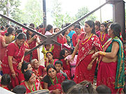
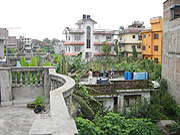

訪問した学校では、全て英語での授業が行われていて、４才でも英語の単語を宿題でやってきます。
驚きました。
ホストファミリーは、皆さんとても優しくて、充実した１週間でした。
歓迎の気持ちがとてもありがたかったです。
今回一緒に参加した友人のＮ．Ｔさんと隣同士のお宅でホームステイでき、双方がとても仲の良いご家庭で、お互いの家で日本料理・ネパール料理のパーティーもでき、最高でした。


ネパールでは、どの家も雨水をためるタンクがあり、どの家も赤煉瓦で造られていてます。
ホームスティ先はとても恵まれた家庭が多いです。